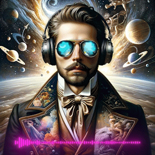
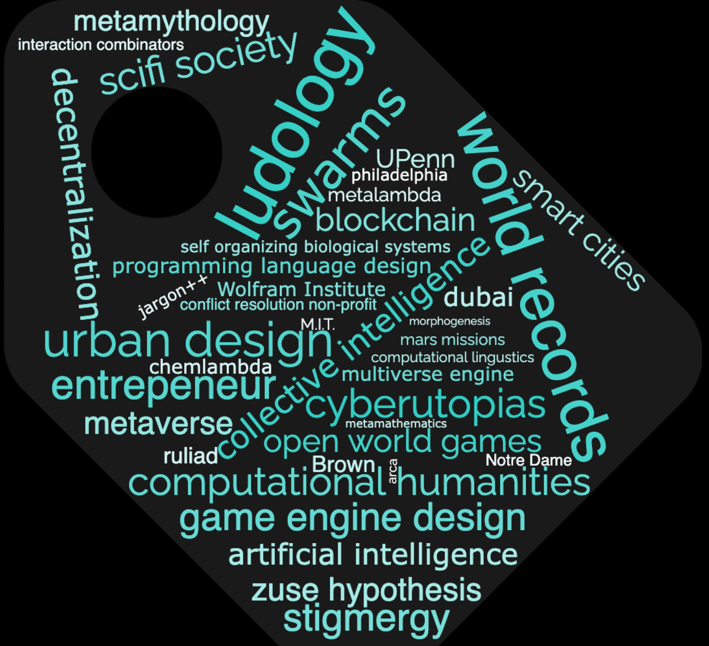
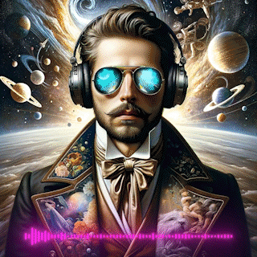
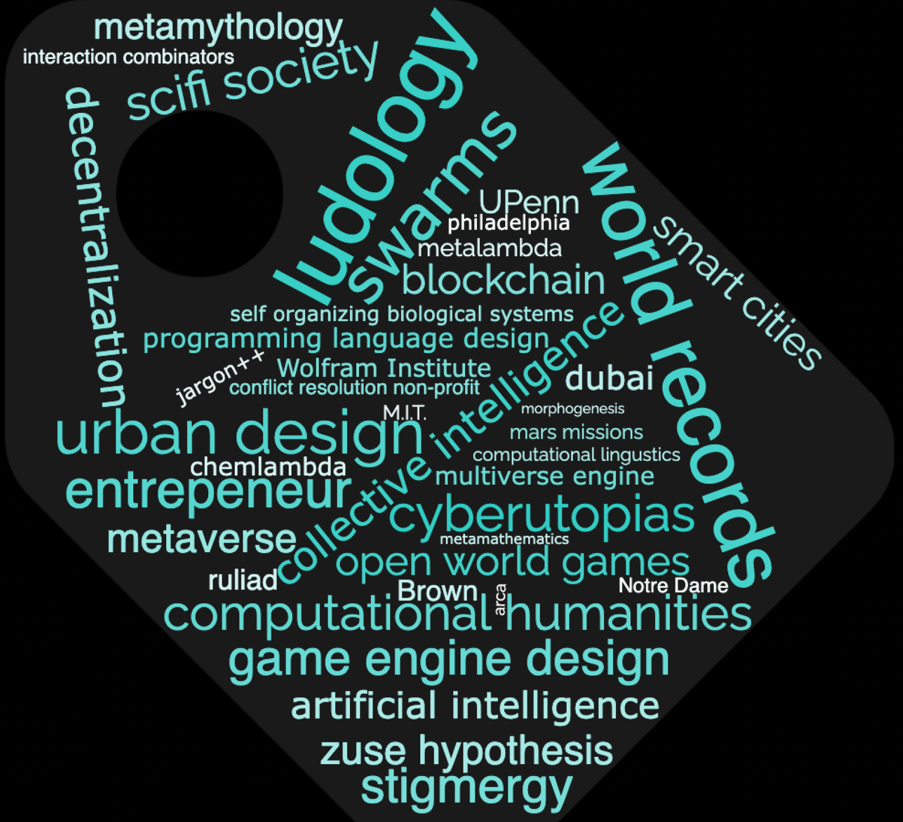

>> (create
(world (1.34.45
>> (insert
(planet (5.10.45
>> (run
(lifesim (algo1, 100 ws
TedX, Game of MetaLife, 2022
Philosophy Portal, "On the origins of logic," 2023
Wolfram Research, Musical Composition with Multiway Turing Machines, 2022
MIT Law Review, Hard Problems in Computational Law (pending)
Philosophy Portal, Nietzsche's seven platonisms, 2022
"Mars Settlement Master Plan", 2023
Dubai Engineering Forum, "A comparison of smart contract languages," 2021
"The Philosopher Game: an AI game for evaluating counterfactual universes", 2023
"Artificial Superintelligence", 2023
Space Battle Royale, 2023
From Cryptoanarchy to Cyberutopias (pending, expected 2024)
 


